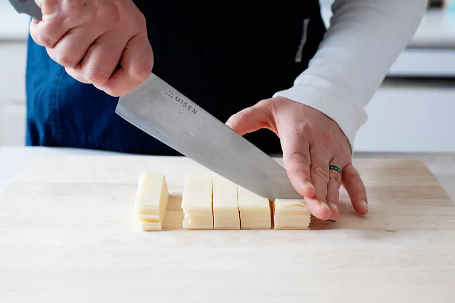
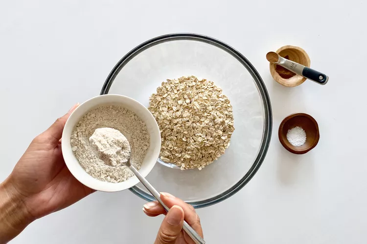

A
Air fry: To cook in a quick-heating countertop convection oven. Air frying is not actually frying.
Aromatics: Ingredients such as herbs, spices, and vegetables used to add flavor and aroma to dishes. Read More
B
Bake: To cook in an oven, usually at moderate temperatures (around 350°F).
Baking sheet: A large, flat metal sheet such as a cookie sheet or sheet pan. Some are totally flat; some have rims.
Batter: A pourable mixture prior to baking, often used for making pancakes, muffins, and quick breads.
Beat: To mix ingredients vigorously.
Bechamel: A sauce made from a cooked flour-and-butter paste (a roux) and thickened with milk.
Blanch: To quickly boil foods, often vegetables. Blanching often only partially cooks foods.
Blender, high-speed: A blender with a powerful motor and pitcher made of sturdy, shatterproof plastic. High-speed blenders can smoothly puree foods that regular blenders can’t. Read More

chef's Knife, image:Alison Bickel
C
Casserole: A sturdy baking dish or pan.
Chiffonade: To shred leafy foods, such as lettuce or herbs, very finely with a knife.
Chef’s knife: An all-purpose knife, typically with a blade that's 6-10” long.
Colander: A perforated metal or plastic bowl with handles used for draining foods cooked in liquid.
Convection oven: An oven with fans that circulate air for even browning and oftentimes faster cooking.
Cookie scoop: A metal tool shaped like an ice cream scoop that’s used to portion cookie dough, as well as other scoopable foods.
Cooling rack: A sturdy wire rack to set hot baked goods on so they cool evenly.
Cream: To beat solid fat (often shortening or butter) with sugar until lightened in texture and very well combined.
Cross-contaminate: To spread dangerous bacteria from one food, such as raw chicken, to another, such as raw vegetables, by using unwashed cooking tools and surfaces for preparing the same foods. Read More

Dry ingredients.Image:Kalisa
Marie Martin
D
Deep fry: To cook food by fully immersing it in hot fat.
Deglaze: To add liquid, often stock or alcohol, to a pan or pot after cooking meat or vegetables in a small amount of fat. Deglazing releases the flavorful browned buildup from the bottom of the pan; often the liquid added is nearly cooked off until a thick, glaze-like mixture forms.
Dice: To chop food evenly into small pieces or cubes. Fine dice is 1/4”, medium dice is 1/2”, and large dice is 3/4”.
Divided: When a recipe calls for an ingredient that is divided, you add the same ingredient at two or more different steps of the recipe.
Dough: A cohesive unbaked mixture of flour and other ingredients that’s too stiff to pour, and thicker than a batter.
Drippings: The fat and liquid that drips out of meat as it roasts or browns. Read More
E
Emulsion: A homogenous mixture of two items, such as water and oil, that do not typically mix. In an emulsion, tiny droplets of one liquid are suspended in the other. Mayonnaise, hollandaise, and ganache are all emulsions. Improperly made, an emulsion can “break” and separate back into two distinct liquids
F
Fold: To gently mix one substance into another using a folding motion with a silicone or rubber spatula.
Food processor: An appliance for pureeing, slicing, grating, and chopping food. Read More
G
Ganache: A smooth mixture of melted chocolate and/or butter. A liquid ganache may be used as a sauce, or to glaze a cake; hardened ganache can be rolled or cut to form truffles, or whipped to make dessert fillings.
Griddle: A flat, heated surface used for cooking.
Grilling, indirect: To grill food on a cool side of the grill and not directly over the flames or coals. Indirect grilling is best for foods that need to cook longer, such as whole chicken or pork ribs.
Grilling, direct: To grill directly over the coals or flames. Direct grilling is best for quick-cooking foods, or for giving grill marks to foods that cook longer.

chef's Knife, image:Alison Bickel
H
Heavy-bottomed pot: A pot with a base that’s sturdy enough not to overheat easily. Heat distributes better in pots with heavy metal bottoms, making food less likely to burn.
Hollandaise: A fundamental sauce in classical French cuisine made of lemon juice and egg yolks emulsified into melted butter. Hollandaise is served over seafood, steaks, and eggs Benedict.
I
Infuse (steep): To let an aromatic sit in liquid, either hot or cold, so it can flavor the liquid.
J
Julienne: To cut food finely into matchsticks.
K
L
Liquid ingredients: The ingredients in a recipe that contain moisture, such as molasses, milk, and eggs.